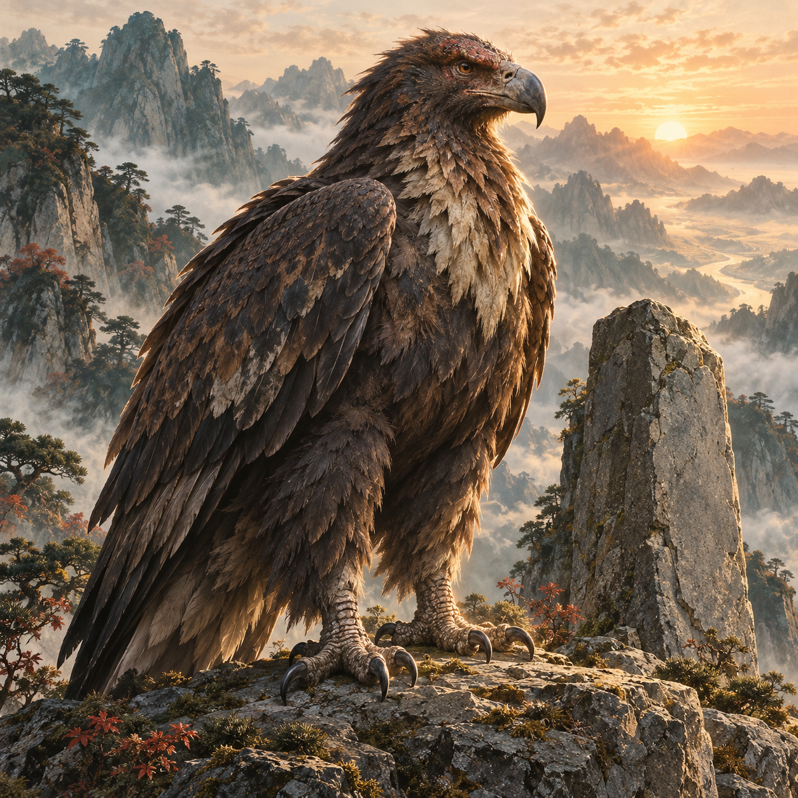
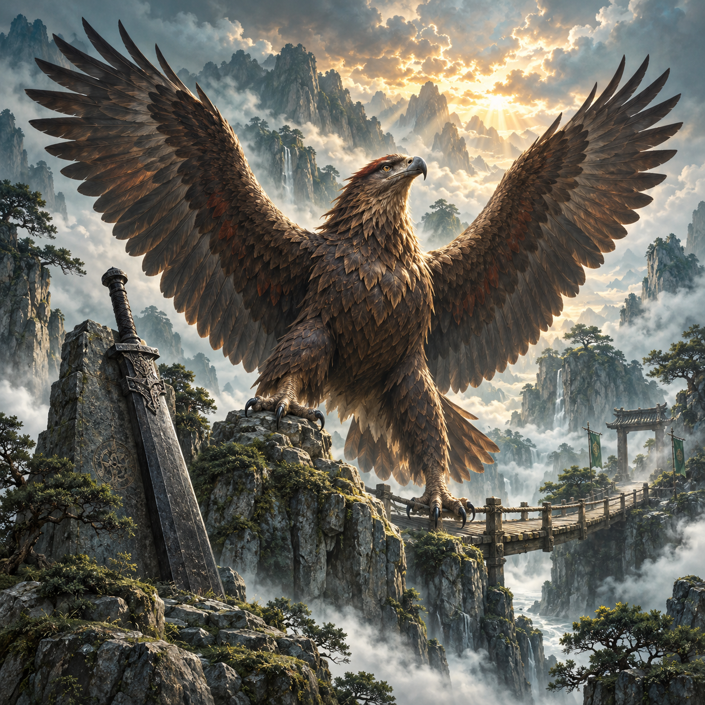

UR
玄翎重岳雕

新用途尚待選圖

目前抽到就能看到
再築一橋
從山碑旁收翼獨守，到展開巨翼護住過橋的夥伴。
候選信物／稱號：渡橋之羽 · 一諾越重岳
查看圖片對應與來源
pet_ur13 → pet_ur16
前版 SHA-256：9f6fc63881e6d6349f218dfd0a4ae888deff922577684d38169d2b873cdcc7a2
正式 SHA-256：3a260a48730bc48a2f32710c297e14db2c07d2a2dd0e478a4d5413f0f2c80954
前版來源為 v2 封存候選，不宣稱所有圖片都是 V1，也未自動取得覺醒用途認可。